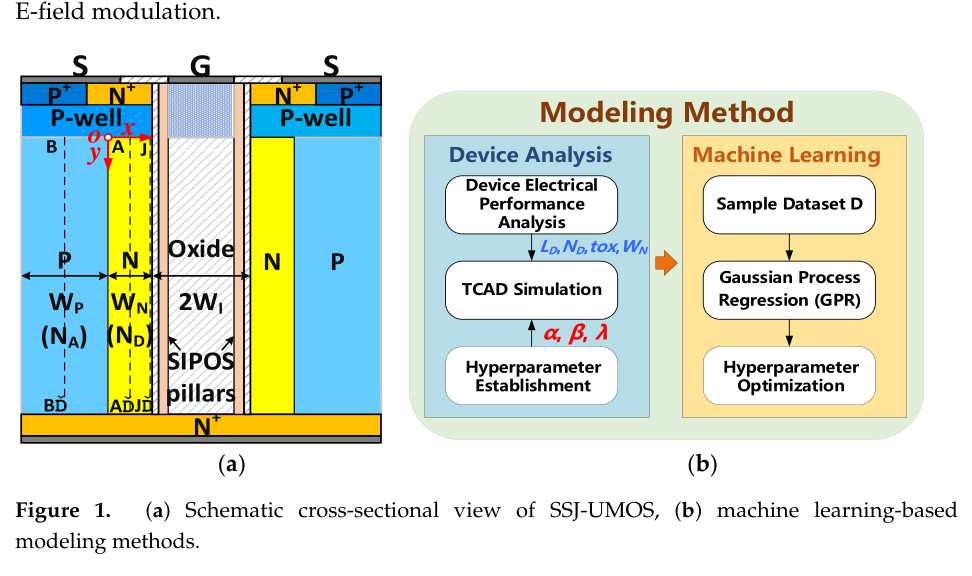
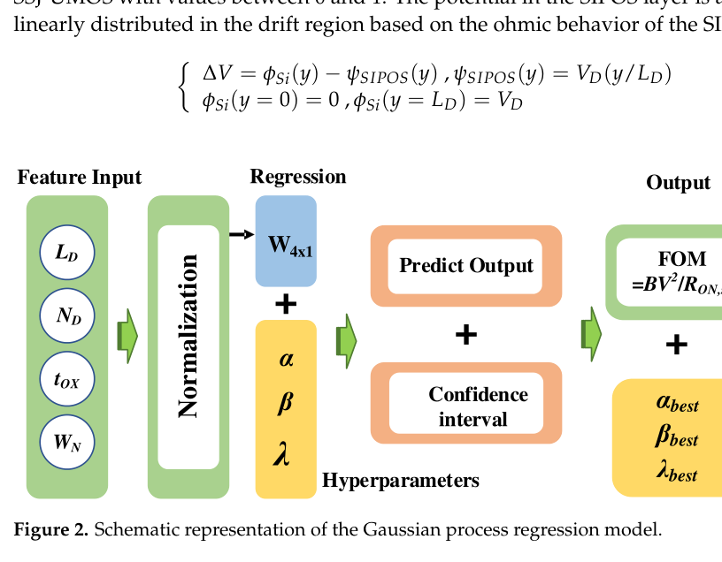
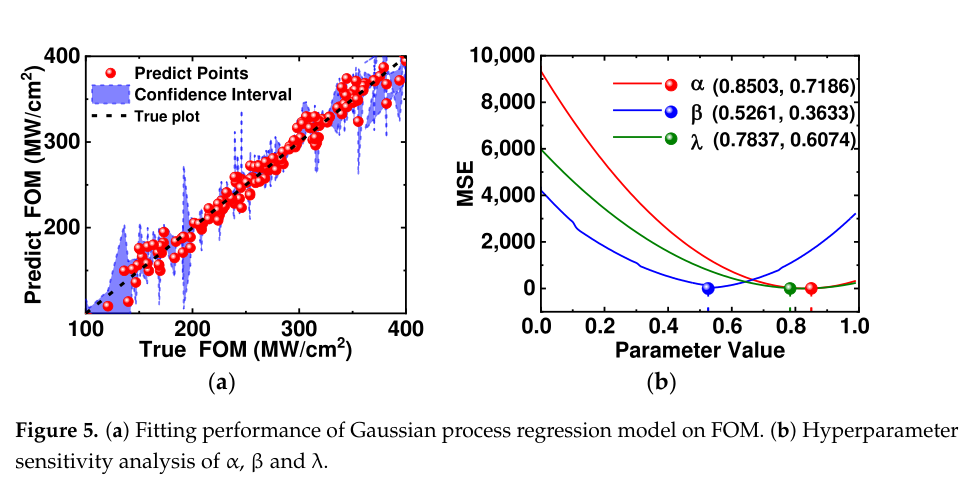

论文导读
Machine Learning-Based Figure of Merit Model of SIPOS Modulated Drift Region for U-MOSFET
Micromachines, 15(3) · 411
面向 SIPOS 调制漂移区 U-MOSFET，建立结合物理解析与 GPR 的 FOM 预测模型。
研究问题
超结 U-MOSFET 的 BV-RON,sp 折中受电场调制、charge coupling 和结构参数共同影响，单纯解析模型难以兼顾可解释性和预测精度。
方法
论文先基于 Poisson 方程构建物理解析表达，再使用 Gaussian Process Regression 预测 FOM = BV²/RON,sp 并优化超参数，最后结合 TCAD 验证结构参数和性能边界。
技术路线
- Device physics
分析 SIPOS 柱对漂移区电场和电荷耦合的影响。
- Analytical model
从 Poisson 解出发建立 FOM 相关表达。
- GPR correction
用高斯过程回归预测并优化模型参数。
- TCAD check
用 TCAD 验证 BV-RON,sp 折中与参数趋势。
证据
- 目标
- FOM = BV²/RON,sp
统一衡量击穿电压和导通电阻折中。
- 方法
- Physics + GPR
解析模型与机器学习校准结合。
- 验证
- TCAD
用仿真验证模型趋势和参数选择。


SIPOS U-MOSFET 结构与建模对象
图中展示 SIPOS 调制漂移区结构和论文关注的关键器件参数。
页面读者可以先从结构图理解 FOM 变化的物理来源。
图源：Micromachines, 15(3), 411 (2024)。 © 2024 作者。 CC BY 4.0.
查看原图

GPR 预测模型
该图说明高斯过程回归如何连接结构参数和器件性能指标。
GPR 的价值在于能在样本有限的 TCAD 场景下提供可解释的预测和不确定性线索。
图源：Micromachines, 15(3), 411 (2024)。 © 2024 作者。 CC BY 4.0.
查看原图

FOM 拟合与对比
拟合图展示预测 FOM 与仿真或计算结果之间的一致性。
这部分是判断模型能否用于器件快速筛选的关键证据。
图源：Micromachines, 15(3), 411 (2024)。 © 2024 作者。 CC BY 4.0.
查看原图结论与边界
物理解析模型和高斯过程回归可以共同刻画 BV-RON,sp 折中，并保留可解释的器件参数关系。
将物理解析关系与 GPR 预测结合，为考察结构参数和 BV–导通电阻折中提供建模路径。
- 把 SIPOS 柱引入超结 U-MOSFET 漂移区调制，讨论突破 SJ silicon limit 的 BV-RON,sp 折中。
- 用 GPR 校准解析模型参数，兼顾物理含义、预测精度和可解释优化。
- 系统讨论漂移区、氧化层厚度和电场调制系数等关键参数对 FOM 的影响。
这篇适合关注 physics-informed ML 的读者：它不是只用数据拟合，而是用数据修正具有物理结构的模型。
引用
Zhen Cao, Qi Sun, Chuanfeng Ma, Biao Hou, and Licheng Jiao. Machine Learning-Based Figure of Merit Model of SIPOS Modulated Drift Region for U-MOSFET. Micromachines, 2024, 411.
下载 BibTeX